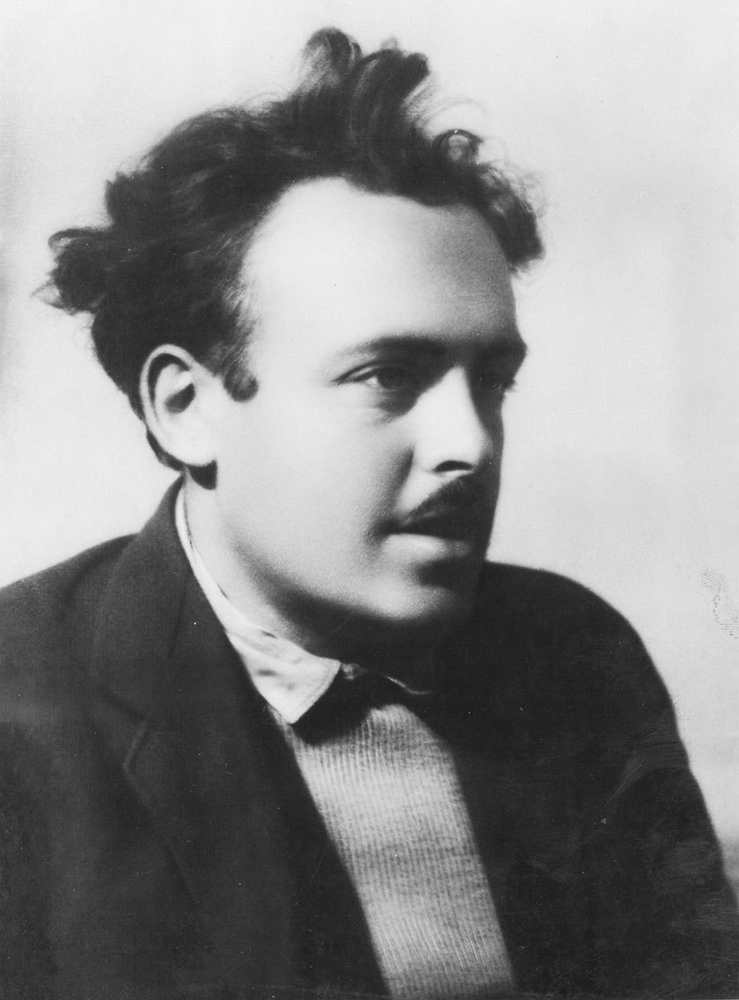
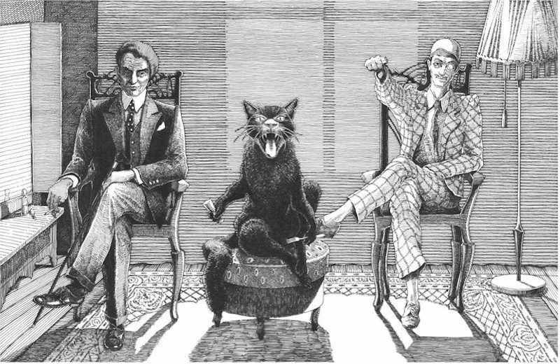

Сатана правит бал в сталинской Москве, Маргарита мстит литературным критикам, тьма накрывает ненавидимый прокуратором город. Самый популярный русский роман XX века — это одновременно едкий фельетон о советских обывателях, апокриф о последних днях Христа и история спасительной любви.
О чём эта книга?
В Москву конца 1920-х, всё такую же разгульную и мещанскую, но уже советскую, прибывает таинственный иностранец, окружённый опереточной свитой. Он вовлекает оказавшихся на его пути москвичей в серию невообразимых происшествий, но его истинная миссия — найти опального автора романа о евангельской истории и влюблённую в него женщину. Булгаков начинает с традиционного для своего времени, почти фельетонного сюжета — о том, как застоявшийся советский быт взрывается вторжением чужака, вплетает в него историю последних дней Иисуса и приходит к очень личному трагическому повествованию о силе творчества, свойствах любви и переплетении добра и зла.
Автор книги, Михаил Булгаков
Когда она написана?
Обычный для Булгакова приём — фантастическое внутри обыденного — задаёт стиль московских глав: это гротескное, ироническое описание московского быта и нравов, иногда на грани фельетона. Московская сатирическая фантасмагория разбивается вкраплениями текста другой природы: с одной стороны — искривлённый мир раскачивающихся на люстре котов и пивных ларьков без пива, с другой — как бы документальный роман о древности с его возвышенно-лаконичным стилем и поэтические, почти музыкальные по своему звучанию и ритму фрагменты: рассказ Мастера о своей любви, полёт Маргариты, лирические отступления повествователя — из этих стилистических контрастов и высекается энергия романа.
Что на неё повлияло?
В самом первом приближении тексты Булгакова (и это касается не только «Мастера») наследуют традициям Гоголя и Гофмана: проникновение волшебного в реальность, гротескные похождения нечисти в современном мире, отсвет потустороннего, ложащийся на самые бытовые сцены, — вот черты, перешедшие к нему по этим линиям родословной.
Другие родовые сходства сближают булгаковский текст с прозой Андрея Белого: Булгакову тоже свойственны внимание к ритму и музыке фразы, апокалиптические настроения и образы «вечных» городов, организующие повествование. Исследователи находят у двух авторов множество близких мотивов: так, бал у Сатаны напоминает бал почивших северных королей из «Северной симфонии (1-й героической)» Белого. Впрочем, говорить здесь о прямом влиянии или заимствовании было бы неправомерно — список возможных источников булгаковских деталей и образов неисчерпаем.
Взять бы этого Канта, да за такие доказательства года на три в Соловки!
У персонажей романа есть реальные прототипы?
Поиск прототипов булгаковских персонажей, как показывает история булгаковедения, ограничен лишь фантазией исследователя: так, в книге Бориса Соколова «Тайны «Мастера и Маргариты» для каждого из героев романа приводится внушительный перечень исторических и литературных прообразов, вплоть до того, что прототипом Коровьева оказывается Молотов, в коте Бегемоте обнаруживаются черты Зиновьева, а «нижний жилец» Николай Иванович, превращённый в борова, являет собою прозрачный намёк на Бухарина. Этот поток уподоблений можно объяснить свойствами самого текста, в структуре которого, как пишет Борис Гаспаров, «постоянное сходство не только не требуется, но и не допускается. Любая связь оказывается лишь частичной и мимолётно-скользящей, несёт в себе не прямое уподобление и приравнивание, а лишь ассоциацию». Природа этих ассоциативных связей позволяет приискать почти любому персонажу практически любой прототип; впрочем, в нескольких случаях можно проследить и действительно убедительные сходства. Так, председатель Зрелищной комиссии Семплеяров недвусмысленно отсылает к фигуре партийного функционера Авеля Енукидзе, который в должности председателя правительственной комиссии по руководству Большим и Художественным театрами немало поспособствовал запрету булгаковских пьес и, подобно своему литературному двойнику, «брал под покровительство хорошеньких девиц». Мариэтта Чудакова, ссылаясь на воспоминания Елены Булгаковой, находит в Алоизии Могарыче, написавшем донос на Мастера, черты Эммануила Жуховицкого, переводчика и осведомителя НКВД, вхожего в дом Булгаковых. Берлиоз со своей оголтелой антирелигиозностью напоминает Демьяна Бедного, Иван Бездомный (по крайней мере в начальных главах) похож на комсомольского поэта Александра Безыменского, фигура поэта Рюхина, говорящего о Пушкине в завистливо-хамском тоне, явно намекает на Владимира Маяковского с его стихотворением «Юбилейное» (1924): «На Тверском бульваре / Очень к вам привыкли. / Ну, давайте, / подсажу на пьедестал».
В особенности ненавистен мне людской крик, будь то крик страдания, ярости или иной какой-нибудь крик. Успокойте меня, скажите, вы не буйный?
Александр Безыменский. 1936 год. Иван Бездомный в начальных главах похож на комсомольского поэта Безыменского
Откуда у Воланда своя свита? И почему в ней присутствует говорящий кот?
Сатана в христианской демонологии традиционно рисуется как властитель злых духов и демонов, но представление о том, что князь тьмы должен быть окружён некоей постоянной свитой и тем более определение её личного состава в этой традиции отсутствует. Окружение Воланда — это пёстрый набор персонажей, частично отсылающий к уже встречавшимся в мифологии демонам, но составленный Булгаковым по собственному разумению. Самый «неканонический» представитель этой свиты — Коровьев-Фагот; исследователи приводят множество литературных ассоциаций, но ни один из известных демонов не соответствует никаким чертам личности Коровьева (в том числе в его открывающейся в финале ипостаси рыцаря с никогда не улыбающимся лицом). Самую удивительную догадку о происхождении этого персонажа высказывала вторая жена Булгакова Любовь Белозерская: по её словам, облик и манера речи Коровьева списаны со слесаря-водопроводчика Агеича, ухажёра булгаковской домработницы Маруси. Имя Азазелло образовано от имени падшего ангела Азазеля из ветхозаветной Книги Еноха, принёсшего людям оружие и украшения (у Булгакова он также выступает в двойственной роли — безжалостного убийцы и обольстителя, который дарит Маргарите волшебный крем). Абадонна, появляющийся на балу Сатаны и демонстрирующий глобус, где можно наблюдать в реальном времени события одной из европейских войн, — это Аваддон, один из ангелов Апокалипсиса (ему же посвящены повесть Николая Полевого и наверняка известное Булгакову стихотворение Василия Жуковского). Наконец, говорящий кот носит имя чудища из библейской Книги Иова; в средневековом трактате «Молот ведьм» Бегемот упоминается как демон, дающий людям звериные наклонности; в частности, он выступает как демон чревоугодия — чем можно объяснить невероятное обжорство булгаковского Бегемота в Торгсине . В демонологии чёрный кот традиционно рисуется спутником или атрибутом дьявола; впрочем, представление о том, что кот должен исполнять при дьяволе роль шута, да ещё разговаривать и стрелять из револьвера, в литературе до Булгакова не встречается. Бегемот в романе обладает невероятным красноречием: его фразы «Королева в восхищении!», «Не шалю, никого не трогаю, примус починяю» и «Разве я позволил бы себе налить даме водки? Это чистый спирт!» давно ушли в народ (а последняя стала важной частью русского застольного церемониала); подобный афористический талант также не встречался ранее ни у мифологических, ни у литературных котов.
Свита Воланда